מתאים לבמאים, מפיקים ואדריכלים שמחפשים "עין", לא ספק.
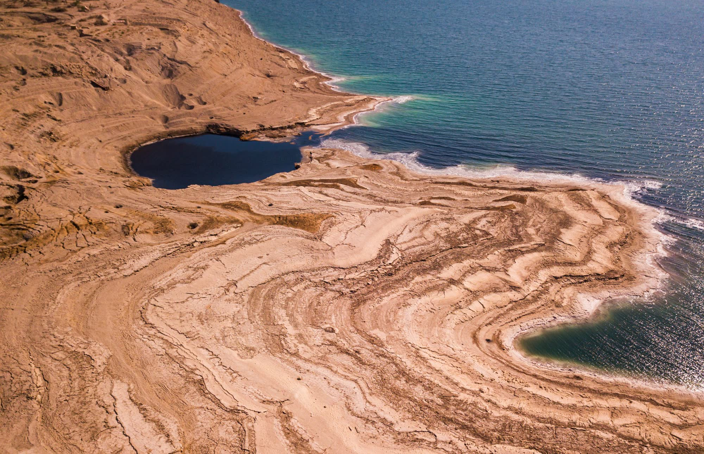
צילום רחפן קולנועי להפקות, קליפים, אירועים ונדל״ן.
ים המלח · 1/4
צילום רחפן קולנועי להפקות, קליפים, אירועים ונדל״ן.
מתאים למי שרוצה להרשים בטלפון בחמש שניות: סושיאל, אירועים, פרסום.
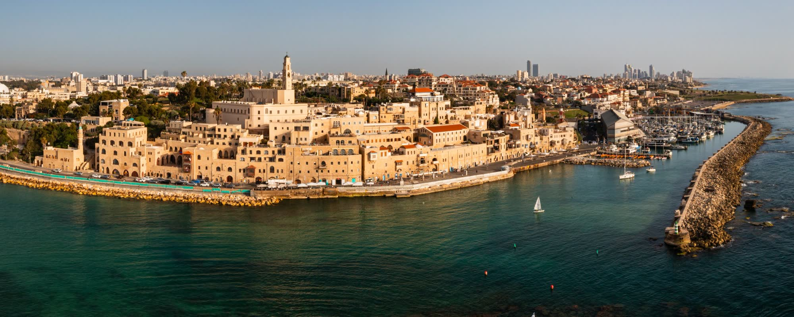
01 / נמל יפו
צילום רחפן קולנועי. את האישורים, הביטוח והתיאומים אני לוקח עליי.
בואו נדבר01 / נמל יפו
צילום רחפן קולנועי. את האישורים, הביטוח והתיאומים אני לוקח עליי.
בואו נדבר בוואטסאפמתאים לנדל״ן, אדריכלות, תעשייה וגופים שרוצים לראות מקצועיות ובטיחות.
ארכיון · 2018 → 2026
כל טיסה עם סד״פ, אישור וביטוח. כל פריים עם מיקום, תאריך וגובה.
נדל״ןאדריכלותהפקותאירועים
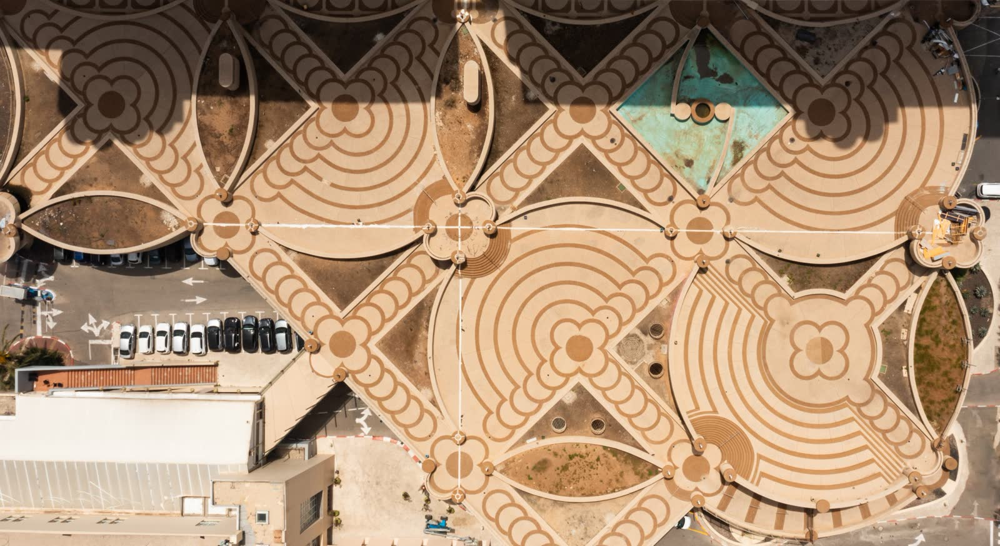
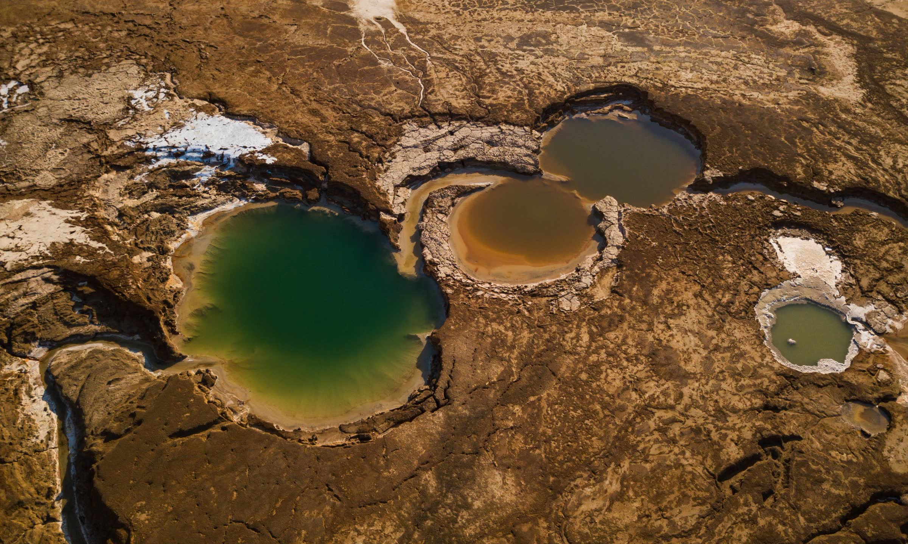
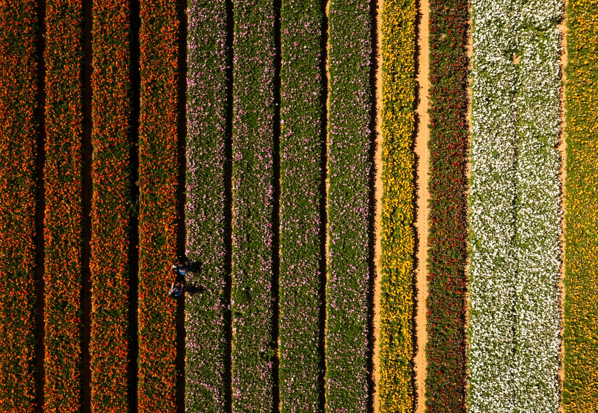
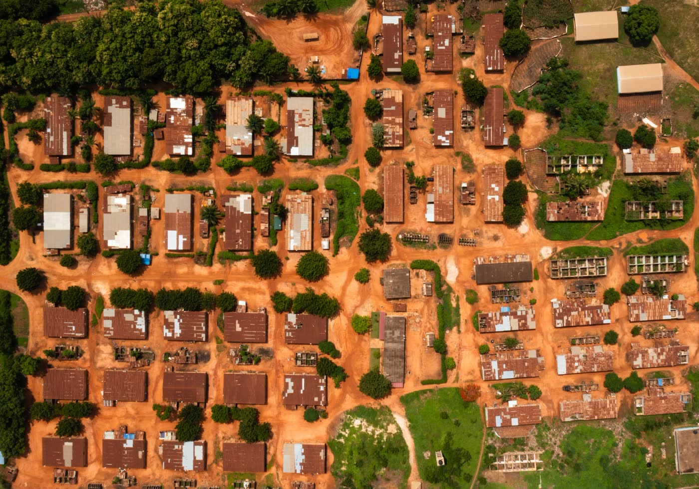
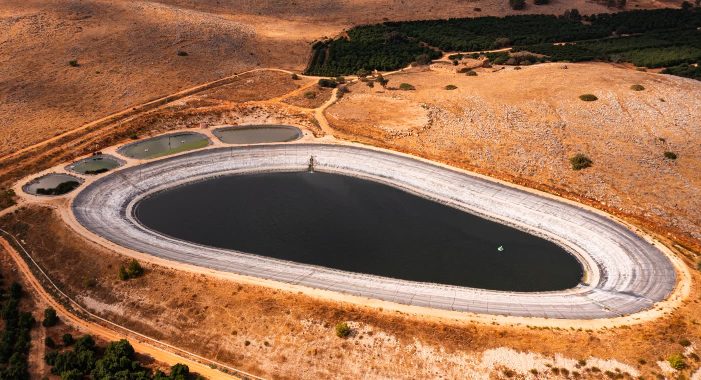
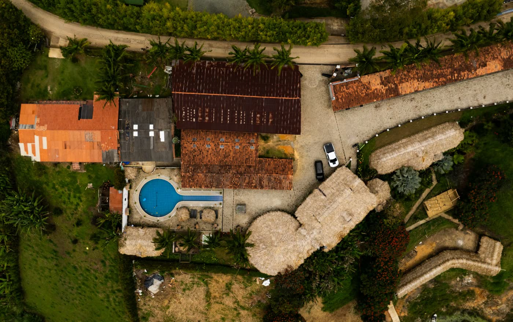
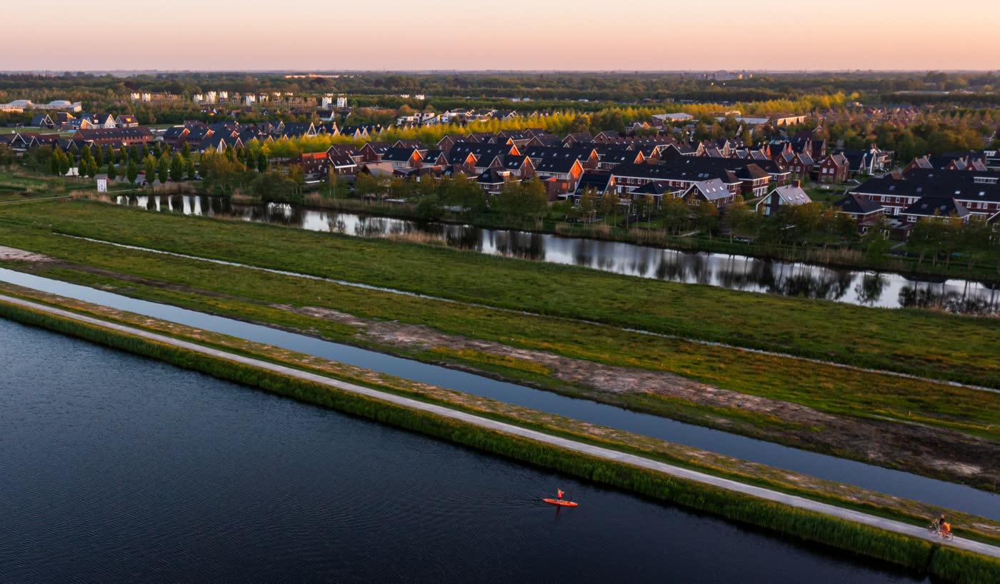
054-6330531 · differentperspective.jk@gmail.com
ארכיון · 2018 → 2026
כל טיסה עם סד״פ, אישור וביטוח. כל פריים עם מיקום, תאריך וגובה.
מתאים לשיווק ישיר: קמפיינים, חתונות, עסקים קטנים. נראה ישראלי ולא מתורגם.
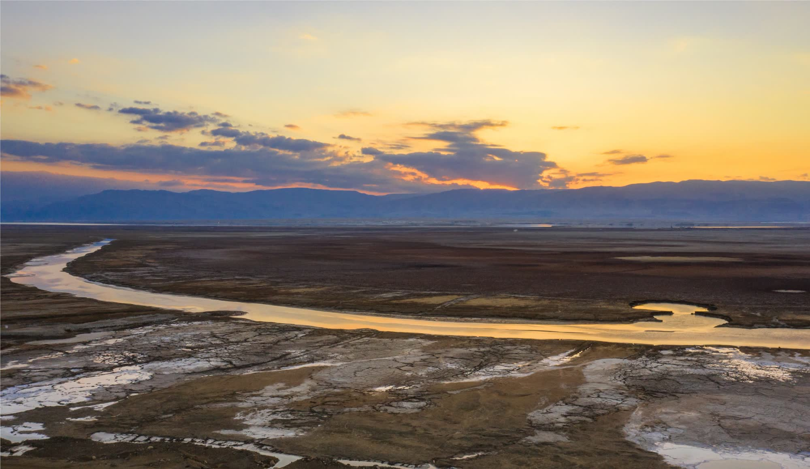
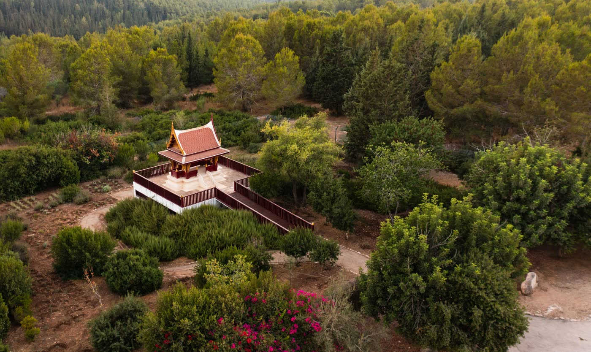
צילום רחפן קולנועי להפקות, אירועים ונדל״ן. רישיון רת״א, ביטוח צד ג׳, ואישורים עליי.
לקבל הצעת מחיר בוואטסאפ